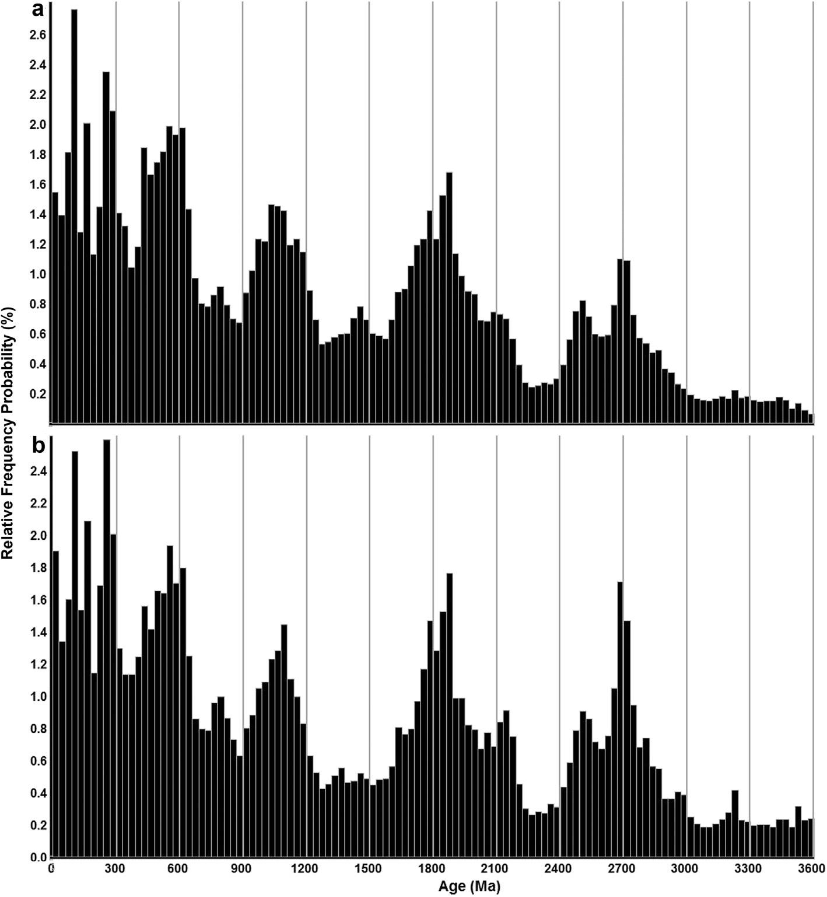

Statistical analyses of Global U-Pb Database 2017

Resumo em Português
O método de obtenção de amostras de zircão afeta a estimativa da distribuição global de idades U-Pb. Os pesquisadores geralmente coletam zircões por meio de amostragem por conveniência e amostragem por conglomerados. Ao utilizar essas técnicas, ajustes de ponderação proporcionais às áreas das regiões amostradas melhoram as estimativas não ponderadas. Neste trabalho, métodos de área de grade e de sedimentos modernos são utilizados para ponderar as amostras de um novo banco de dados com 418.967 idades U-Pb. Testes preliminares envolvem dois modelos de idade. O Modelo 1 utiliza as idades U-Pb mais precisas como as melhores idades. O Modelo 2 utiliza a idade 206Pb/238U como a melhor idade se esta for inferior a um limite de 1000 Ma; caso contrário, utiliza a idade 207Pb/206Pb como a melhor idade. Uma análise de correlação entre as idades dos Modelos 1 e 2 indica distribuições quase idênticas para ambos os modelos. No entanto, após a aplicação de critérios de aceitação para incluir apenas as análises mais precisas com mínima discordância, um histograma das amostras rejeitadas mostra uma rejeição excessiva das análises do Modelo 2 em torno do ponto de corte de 1000 Ma. Devido à taxa de rejeição excessiva do Modelo 2, selecionamos o Modelo 1 como o modelo preferencial. Após a eliminação de todas as amostras rejeitadas, as análises restantes utilizam apenas as idades do Modelo 1 para cinco subconjuntos de tipos de rocha do banco de dados: ígneas, meta-ígneas, sedimentares, metassedimentares e sedimentos modernos. Em seguida, gráficos de séries temporais, análises de correlação cruzada e análises espectrais determinam o grau de alinhamento entre as séries temporais e sua periodicidade. Para todos os tipos de rocha, as distribuições de idade U-Pb são semelhantes para idades superiores a 500 Ma, mas apresentam baixo alinhamento para idades inferiores a 500 Ma. As semelhanças (>500 Ma) e diferenças (<500 Ma) destacam como o reducionismo a partir de um banco de dados detalhado aprimora a compreensão de sequências dependentes do tempo, como erosão, mecanismos de transporte detrítico, litificação e metamorfismo. Análises de séries temporais e análises espectrais das distribuições de idade indicam predominantemente uma sequência síncrona de triplicação de período de ∼91 Ma, ∼273 Ma e ∼819 Ma entre os vários tipos de rocha.